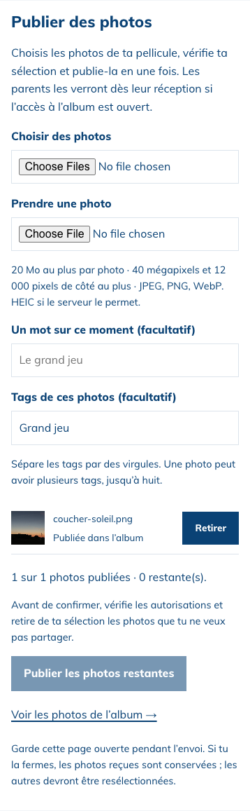

FICHE 8 · ANIMATEURS
Les photos du camp,
depuis ton téléphone
Ton compte habituel. Ta section. Les photos sont publiées en une seule fois.

- Ouvre Photos de camp, puis un album de ta section. Pour en créer un autre la même année, donne-lui un nom.
- Choisir des photos : sélectionne tes images et ajoute des tags si tu veux.
- Vérifie ta sélection et les autorisations, puis touche Publier les photos. Elles sont visibles dès leur réception.
- Retrouve le lien et le QR dans Partager l’album et gérer l’accès, à chaque visite.